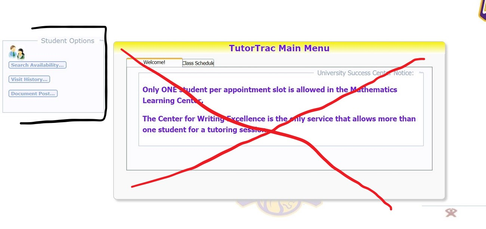
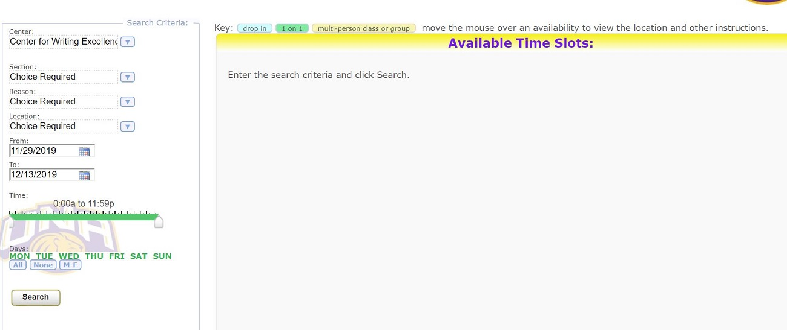

This page wll show the errors associated with UNA's Tutor Trac system. This system is used by students to register for tutoring appointments, librarian consultations, etc.

The errors associated with this image include the schedule that is shown in the center of the page. This schedule is not actually used by students until they have chosen the type and times of appointments they wish to create. For example, if a student
wants to create an appointment with the Writing Center, they must first select that they wish to make an appointment with the Writing Center, then choose the class is which they need assistance. This is shown on the left side of the screen. However,
in order to be more functional, the opening page should have the student select this information before seeing a schedule. For functionality purposes, the Student Options should be the opening page for Tutor Trac.

This page is where students are redirected to selected time slots. This page should retrieve opening appointment times for students. However, this page would still be more functional as the opening page for Tutor Trac.